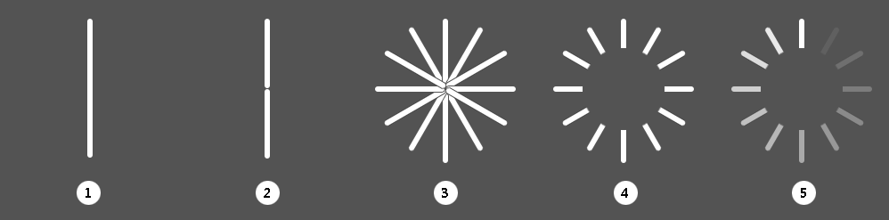

最近打算整理几个动画样式，最常见的就是我们用到的加载动画。加载动画的效果处理的好，会给页面带来画龙点睛的作用，而使用户愿意去等待。而页面中最常用的做法是把动画做成gif格式，当做背景图或是img标签来引用，这种方式最简单，也不会有兼容性的问题。不过本人有时爱折腾，看到一些动画的效果，不管是简单也好，复杂也好，也想尝试用代码来实现它，换一种思维方式，就算在项目中用到的可能性很小，自己多动手多写写总归不会有坏处。
CSS3新增了很多强大的功能，虽然会有兼容性的问题，但是阻挡不了我们去使用它的这些新特性。像一些简单的动画以前靠画图工具来实现，现在单纯用CSS也能非常简单的实现。下面的案例就是利用CSS加html如何实现菊花旋转的动画。

2.1 先定义元素容器，定义每个线条的位置。
2.2 因为考虑到旋转时每根线条的透明度不一致，故要把单根线条分为两个区块。
2.3 使用CSS的rotate方法来对线条进行旋转，旋转的度数取决于线条的数量，最终使线条形成一个正圆。
2.4 在形成圆形的线条上面覆盖一个与背景同色的正圆，正圆圆心与线条形成的圆心保持一致，这样整个形状就会有镂空的感觉。
2.5 这一步最关键，就是形成动画的核心，其实整个动画的实现过程非常简单，就是改变每根线条的透明度，这个可以通过animation的动画延迟来实现，即每根线条的动画延迟时间根据其位置决定。
主要用到了CSS3的rotate旋转方法和animation方法。
3.1 rotate
rotate是transform方法中的一个属性，除了rotate之外，还有translate(平移)，scale(缩放)，skew(拉伸)。具体的就不详细解释了。
3.2 animation
animation方法的使用步骤是先使用@关键字定义动画的关键帧，然后在对应的样式名称里来引用。
案例中先定义动画load
@-webkit-keyframes load{0%{opacity:0;}100%{opacity:1;}}
然后在使用动画的节点样式里来引用
.m-load2 .line div:nth-child(1):before{-webkit-animation:load 1.2s linear 0s infinite;}
其中load 1.2s linear 0s infinite这几个值分别对应动画的名称，动画持续的时间，动画显示的方式，动画的延迟时间，动画是否循环播放。
另外还有动画播放的次数，动画是否反向播放等。